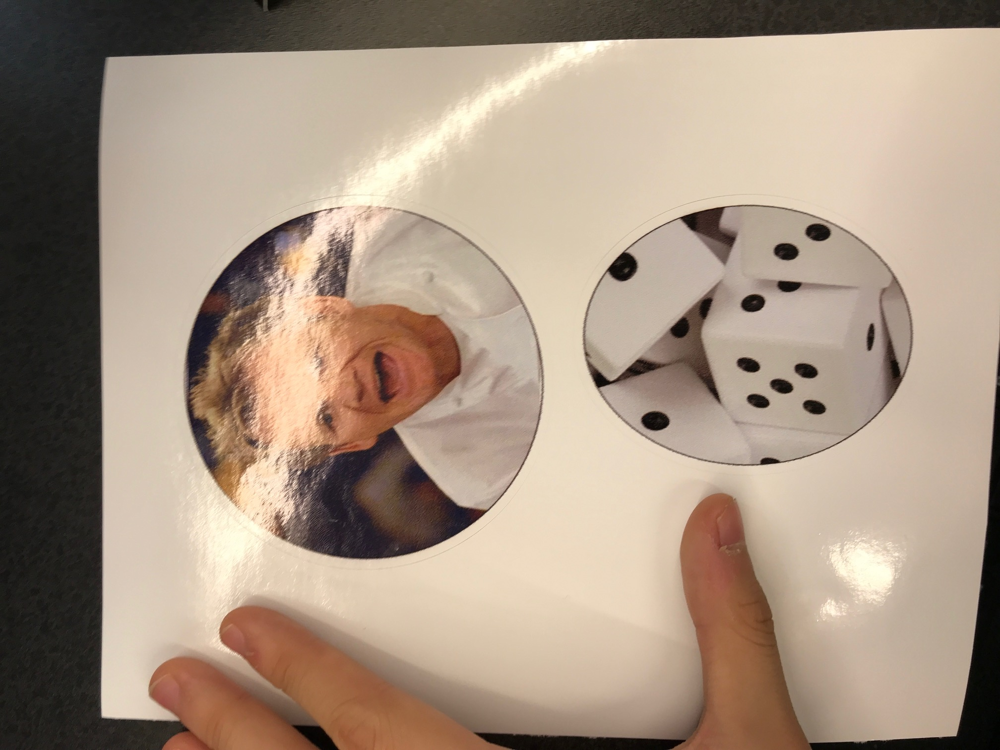
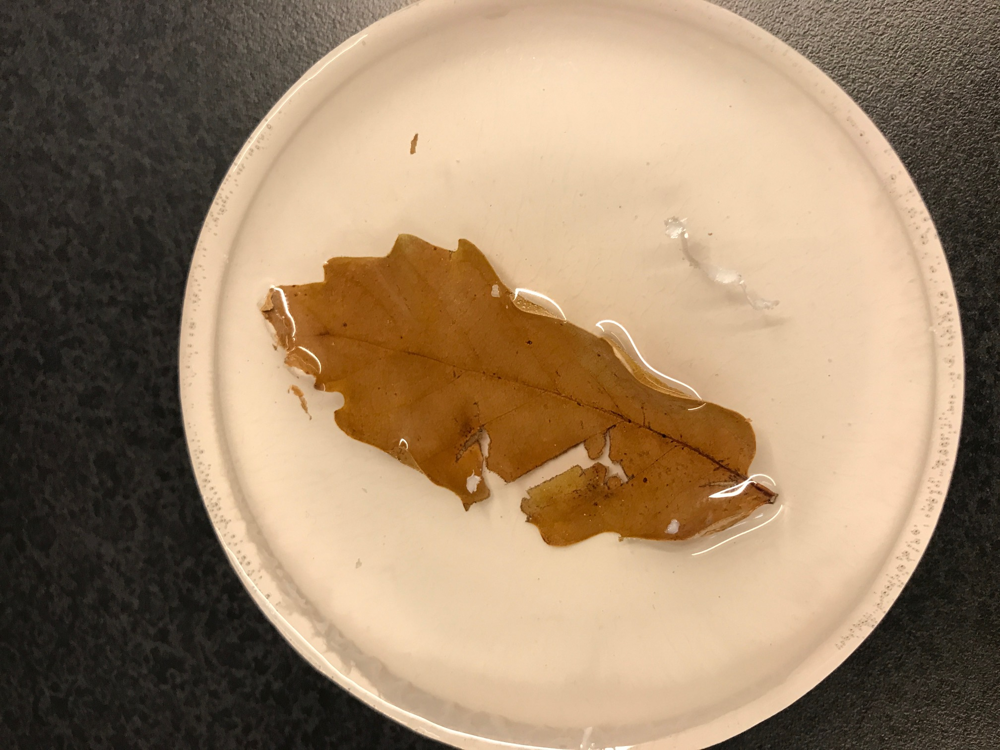

Rotation 6: Vinyl, CNC Milling, Casting and Composites

I cut three stickers using the Roland GS-24. At first I tried to turn famous quotes into stickers, but I realized
cutting out small letters without tearing them off was a painful process. That's why I made ones with simple shapes.

I also printed out two full-color contour stickers of Chef Ramsay and random dice. Please don't ask me why I picked those.
I picked those two pictures, then cut them out to circles in CorelDraw. Using Contour tool, I outlined the boundaries for
the printer.

I mixed two mysterious substances to make urethane. I mixed them well and let it sit for a day. The next day, since I could
not think of any stuff to be encapsulated, so I encapsulated a random leaf. I mixed two other mysterious substances as well
to make epoxy. The leaf was floating on the epoxy, so I had to press it during the whole process. The result turned out to be
alright. I'm good with this.